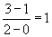

This device cannot display Java animations. The above is a substitute static image
1. A Parabola
The applet shows a table that represents selected values of a function.
The first row shows a selection of x values, while the second row
shows the corresponding values for f (x). The third row
shows estimated values for the derivative, and the fourth row shows
estimates for the second derivative. The estimates for the second
derivative are computed from the pair of derivative estimates above and
from a pair of x values that enclose both x-intervals used to compute the
derivative estimates. For example, the first second derivative estimate
shown is computed as

where the 3 and the 1 are
the two derivative estimates from the table immediately above the second
derivative estimate, while the 2 and the 0 in the denominator come from
the
x-values used to compute the first derivative estimates. Note
that because each derivative estimate spanned an
x-interval, the
second derivative estimate will span two
x-intervals. Can you
calculate some of the other values for the estimated second derivative,
using the data in the table?
2. Parabola with wider intervals
Select the second example from the drop down menu. This is the same
function, but now the x intervals are farther apart.
3. A linear function
Select the third example, a linear function. Compute one or two second
derivative estimates and check that your calculations match those in the
table. What do you notice about the second derivative?
4. A constant function
Select the fourth example, a constant function, which would graph as a horizontal line. Why is the second
derivative always 0?
5. An exponential function
Select the fifth example, an exponential function. Does there seem to
be some relationship between the derivative, the second derivative and
the value of the function? We will return to this in the future.
6. A hyperbola
Select the sixth example, a hyperbola. The derivative estimates are all
negative, but the second derivative estimates are all positive. Why?
Explore
You can make your own example by typing a function definition into the
"f(x)=" box and pressing Enter. You can also select the starting x value and the step
size between x values.
Other differentiation topics
(C) 2011 Copyright Math Open Reference.
All rights reserved